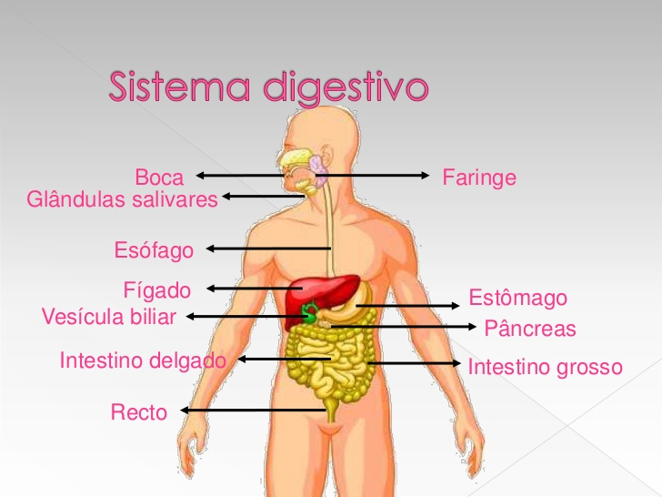

Este es el sistema necesario para la nutricion y alimentacion , es decir, la asimilación de materia orgánica proveniente de afuera del cuerpo. El circuito de este sistema inicia con la boca, la lengua y los dientes, así como las glándulas salivales. Allí se corta, tritura, humedece y prepara el alimento (llamado desde entonces “bolo alimenticio”) para su descenso por el esófago hasta llegar al estómago, una suerte de caldera de ácidos gástricos que desintegran la comida y la reducen a sus elementos más básicos.
En dicho proceso intervienen también el hígado y el páncreas, cuyas hormonas y sustancias preparan todo para la absorción de los nutrientes, que se da en el intestino (delgado primero y grueso después), gracias a una serie de vellosidades que conectan con los capilares sanguíneos.
